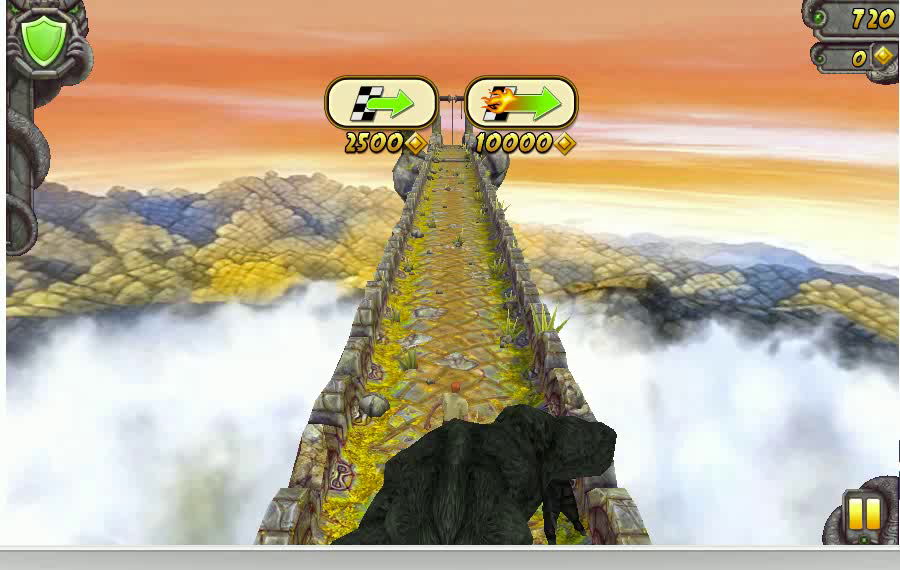

flowchart LR
IN[Input Frame + Action] --> C1[Chunk 1 Denoise]
C1 --> C2[Chunk 2 Denoise]
C2 --> C3[Chunk 3 Denoise]
C3 --> OUT[Streaming Output]
KV[KV Cache Reuse] -.-> C1
KV -.-> C2
KV -.-> C3
style IN fill:#3730a3,color:#fff
style C1 fill:#1a8a8a,color:#fff
style C2 fill:#1a8a8a,color:#fff
style C3 fill:#1a8a8a,color:#fff
style OUT fill:#2d9050,color:#fff
style KV fill:#c69a2d,color:#fff
Matrix-Game 2.0: Real-Time Interactive Worlds
Open-Source · 25fps Real-Time · Streaming World Generation
2025-08-12
Multi-Game Generation

GTA V — Open-world driving

Temple Run — Rapid camera motion
Universal — Real-world scenes
GTA: Coherent World Generation
- Road geometry stays perspective-correct
- Vehicle physics follow driving dynamics
- Lighting consistency across frames
Trained on GTA V gameplay with action annotations at 25fps.